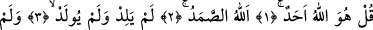
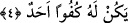

ONUN
HİÇBİR DENGİ
YOKTUR
Bismillâhirrahmânirrahîm
1. De ki: O, Allah birdir.
2. Allah sameddir. (Hiçbir şeye muhtâc değildir, aksine her şey O’na muhtâctır.)
3. O, doğurmamış ve doğmamıştır.
4. Onun hiçbir dengi yoktur.
İlk âyetteki cümlenin bu şekilde “Hüve” şân zamiriyle başlaması, işin başında
muhtevânın büyüklüğüne dikkat çekmektir. Çünkü bir şeyi önce mübhem/kapalı bırakıp
sonra tefsir etmek, gönüllerde daha tesirli olur ve konunun zihinlere iyice yerleşmesini
sağlar.
Ya da bu zamir sorulan şeye âiddir. Yâni “Sizin o sorduğunuz Allah’tır” demektir.
Çünkü rivâyete göre müşriklerin Rasûlullah (s.a.) Efendimiz’e: “Kendisine dâvet ettiğin
Rabbini bize vasfet, onun nesebini bize bildir ve onu bize anlat” demeleri üzerine bu
sûre nâzil olmuştur.[260] Allah Teâlâ nesebi ile alâkalı soruya nesebden münezzeh
olduğunu bildirerek cevap vermiştir. Kendisinden evlat sâhibi ve evlat olmayı,
kefâeti/denkliği nefyetmiştir. Bu durumda zamir mübtedâ olup lafzatullah onun
haberidir. “Ahad” lafzı da ondan bedeldir. Ebû Ali’ye göre nekre-i mahzânın mârifeden
bedel olması bir fâide hâsıl olduğunda câizdir ki, bu da muhtar olan görüştür.
“Allah” lafzı gerçek ilâhın alemi olup bütün esmâ-i hüsnâ’nın mânâsına icmâlî olarak
delâlet eder. Kâşânî demiştir ki: Kanaatimize göre Allah lafzı zât-ı ilâhiyyenin bizzat
kendisinin ismidir.
Abdullah, bütün esmâ-i ilâhiyye ile bezenmiş kul demektir. Dolayısıyla kullar
arasında makâmı ondan daha yüksek, şânı ondan daha âlî olan yoktur. Çünkü kendisinde
ism-i âzam tahakkuk etmiş ve bütün sıfât-ı ilâhiyye ile muttasıf olmuştur. Onun için de
Rasûlullah (s.a.) Efendimiz’e has olarak bu isim kullanılmıştır: “Abdullah Allah’a
ibâdet etmek üzere kalktığında.” (Cin, 72/19) Gerçekte bu isim ancak ona ve ona tâbî
olmaları bakımından veresesi olan kutuplara âiddir.